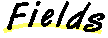

All Packages Class Hierarchy This Package Previous Next Index
Class BCK.ANN.BCKRadialNeuron
java.lang.Object
|
+----BCK.ANN.BCKNeuron
|
+----BCK.ANN.BCKRadialNeuron
- public class BCKRadialNeuron
- extends BCKNeuron
- implements Serializable
BCKRadialNeuron implements neurons whose transfer function is a parameterised Gaussian Bell curve and whose activation is calculated as the euclidean distance of the input weight vector from the input vector - these type of neurons are used in the hidden layer of RBF nets

-
 stdev
stdev
- stdev - standard deviation of Gaussian transfer Function

-
 BCKRadialNeuron()
BCKRadialNeuron()
- Default Constructor
-
BCKRadialNeuron(double)
- Constructor with supplied value for standard deviation

-
 calcActivation()
calcActivation()
- Calculate activation using n-dimensional Euclidean distance
-
fprime()
- Calculates the derivative of the transfer function at the current activation level:
-
getStdev()
-
-
setStdev(double)
-
-
transfer()
- using the current activation, calculate the neuron's new output via a Gaussian curve : e^(-activation/r)

 stdev
stdev
protected double stdev
- stdev - standard deviation of Gaussian transfer Function

 BCKRadialNeuron
BCKRadialNeuron
public BCKRadialNeuron()
- Default Constructor
BCKRadialNeuron
public BCKRadialNeuron(double s)
- Constructor with supplied value for standard deviation

 fprime
fprime
public double fprime()
- Calculates the derivative of the transfer function at the current activation level:
- Overrides:
- fprime in class BCKNeuron
calcActivation
public double calcActivation() throws Exception
- Calculate activation using n-dimensional Euclidean distance
- Throws: Exception
- thrown if illegal delay specified in synapse
- Overrides:
- calcActivation in class BCKNeuron
transfer
protected double transfer()
- using the current activation, calculate the neuron's new output via a Gaussian curve : e^(-activation/r)
- Overrides:
- transfer in class BCKNeuron
setStdev
public void setStdev(double r)
getStdev
public double getStdev()
All Packages Class Hierarchy This Package Previous Next Index